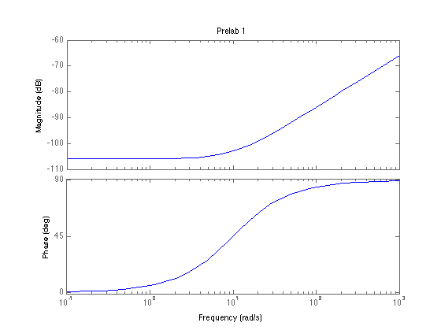
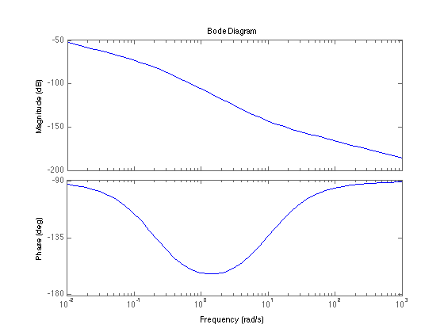
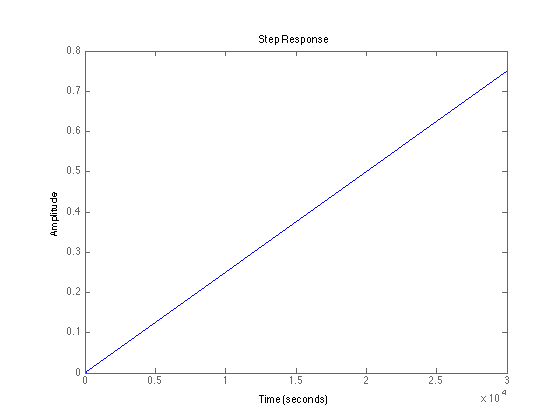
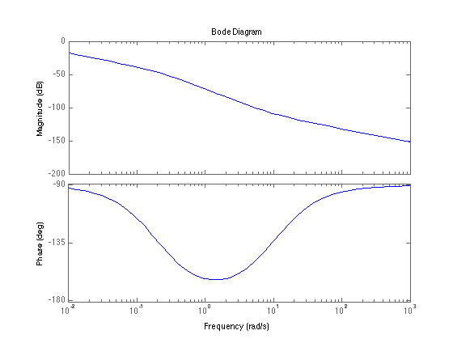

Pre-Lab 9
% Question 1 Rf = 200e3; R1 = 10e3; C = 10e-6; num = [R1*C 1]; den = [C*R1 1+Rf]; Gc = tf(num,den); figure bode(Gc); title('Prelab 1'); % Question 3 num = [1]; % Define the numerator, den = [1 0.2 0]; % Define the denominator. Gm = tf(num, den); % Define the transfer function. figure bode(Gm*Gc); figure step(Gm*Gc); % Question 4 figure bode(50*Gm*Gc);   